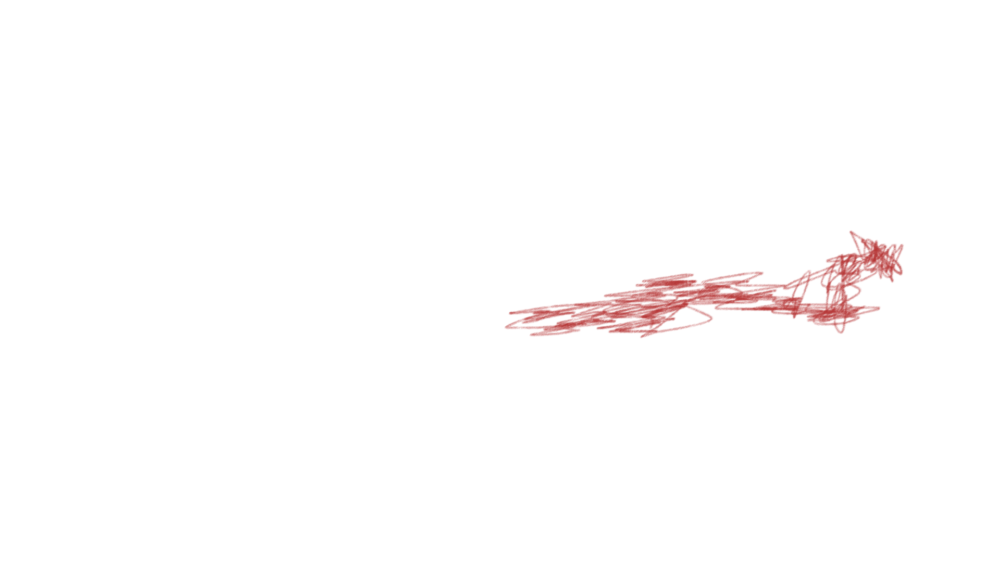
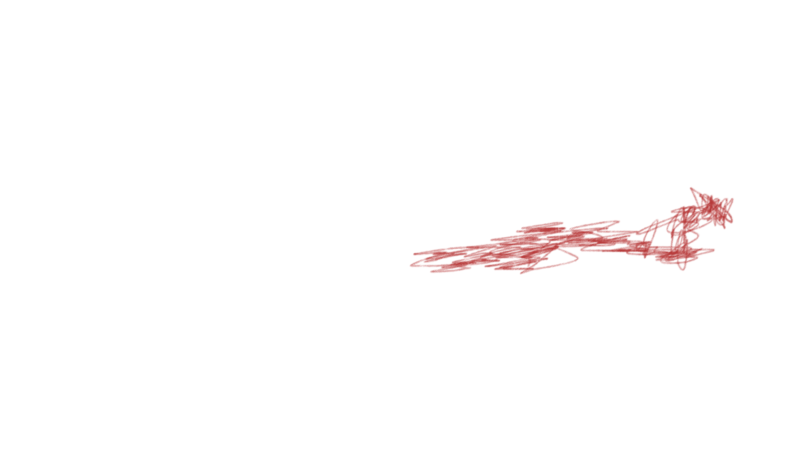

დაკარგული სიმშვიდე
ბავშვობიდან ბუნებას და მე განსაკუთრებული ურთიერთობა გვაქვს. როცა გადავიღლებოდი ან რამეზე დავისტრესებოდი მაშინვე ჩემი სახლიდან იქვე 300 მეტრში მყოფ მდინარის პირას ჩამოვჯდებოდი ხოლმე და ასე ვიყავი საათობრივად ან/და მდინარის მეორე მხარეს გადავდიოდი და იქვე ულამაზეს ტყეში შევდიოდი სასეირნოდ, დღემდე არაფერი მგვრის ასეთ სულიერ სიმშვიდეს როგორც ბუნება, თბილისში საცხოვრებლად გადმოსვლის შემდეგ ძალიან დიდ დანაკლისს განვიცდიდი და ბუნების მაგივრად ბეტონის ნაგებობების დანახვა ყოველ დღე უფრო მეტად მრთგუნავდა.
ბევრს დავდიოდი ქალაქში, იმ იმედით რომ რამე განსატვირთ ადგილს ვიპოვიდი, ერთ დღესაც ბოტანიკურ ბაღს მივაკითხე, რომელიც დიდად არ მიყვარდა. იმ დღისით არ ვიცი რა მოხდა, მაგრამ სრულებით შემიყვარდა ეს ადგილი. უკვე მქონდა ამ ბეტონის ქალაქშიც ადგილი, რომელსაც მივაკითხავდი გადაღლილობის და სტრესის დროს და დამამშვიდებდა, ბოტანიკურამდე მისასვლელი გზაც კი შემიყვარდა -ამოვდიოდი ავლაბრის მეტროსთან, რიყის პარკამდე ფეხით მივდიოდი და მერე საბაგიროთი ავდიოდი. მალე ამ გზის გავლა და ბოტანიკურ ბაღში შეირნობა ჩემი საყვარელი აქტივობა გახდა, არა მხოლოდ თბილისში -საერთოდ.
ფინალურისთვის ფილმს ვაკეთებდი, რომელიც ძალიან პერსონალური იყო და გადავწყვიტე კადრების
ნაწილი, ჩემს საყვარელ ადგილას უნდა გადამეღო. როგორც ყოველთვის ამოვედი ავლაბრის მეტროდან, მაგრამ
ამჯერად კამერა ამოვიღე, ჩავრთე სეთინგებს ვასწორებდი და ამ დროს ვიღაც კაცის ხმა მესმის, ჯერ
რუსულად მითხრა რაღაც ვერ გავიგე და მერე ინგლისურად მკითხა, ჟურნალისტი ვიყავი თუ არა, რაზეც
პასუხად უარი მიიღო და გავაგრძელე კამერის გასწორება, მაგრამ არ ჩუმდებოდა ძალიან ენთუზიაზმით
მელაპარაკებოდა, ნახევარს ვერ ვიგებდი.
მერე მკითხა თუ ჟურნალისტი არ ხარ აბა ვინ ხარო და
ავუხსენი
სტუდენტი რომ ვიყავი და ფინალურისთვის პატარა ფილმს ვიღებდი, სვლა რომ დავიწყე რიყის პარკისკენ,
გამომყვა. მეუბნებოდა რა დამთხვევაა ჰოლივუდის პროდიუსერი ვარო -მე გამეცინა, რაზეც უჩვეულობ
გაბრაზდა.
უამრავ კითხვას მისვამდა და ბევრს ლაპარაკობდა რომ ვეცადე ჩამომეშორებინა თავიდან აგრესიული გახდა
და სიტყვიერი შეურაცყოფების მოყენება დაიწყო, მაგრამ მაინც არ მცილდებოდა თავიდან.
ჩემი ყველა მცდელობის შემდეგ უფრო მეტად აგრესიული ხდებოდა, ვცდილობდი შიში არ შემტყობოდა და თან
იმაზე ვფიქრობდი თავისთვის როგორ მეშველა, რადგან უკვე ისეთ რაღაცეებს მთავაზობდა ვიცოდი ადამიანის
ტრეფიკინგთან მქონდა საქმე. ცოტახნით გავჩერდი გარშემო სიტუაცია დავათვალიერე, თავის დაღწევის
გეგმას ვსახავდი და ამ დროს უცებ ლოყაზე მკოცნის და მეხუტება, გაქვავებული ვიდექი ვერაფერი
გავაკეთე. გზა რომელსაც 10-15 წუთში გავდივარ ხოლმე საშინლად გაგრძელდა, ერთ მომენტში თითქოს
ჩამოვიშორე, მაგრამ უკან მობრუნდა.
მომენტებში ტელეფონით ფოტოებს მიღებდა. საბაგიროებამდე
მივედი
რათქმაუნდა ისიც იქ იყო, უკვე მეგონა თავს ვერასდროს დავაღწევდი, შეამჩნია მაგ მომენტში რომ მთელი
გზა პარალელურად ჩემს მეგობარს ვწერდი და მწყობრიდან გამოვიდა, მიყვირა
“your friends are tying to brainwash you and make you think that i’m some kind of human
trafficker” ამ მომენტში უკვე ძალიან
შემეშინდა და დავრწმუნდი ბოლომდე, რეალურად ვინც იყო, ვუთხარი არ გამომყვე თქო და Საბაგიროში
შევედი, კარების დახურვამდე მაინც ჩაჯდა, გამოსვლა ვეღარ მოვასწარი შეშინებულმა იქ მჯდომ უცხოელ
წყვილს შევხედე და მაშინვე გვერდით მიმისვეს, კაცმა მაშინვე უცხოელ წყვილს დაუწყო ლაპარაკი ჯერ
ინგლისურად, მერე სავარაოდოთ წყვილის მშობლიურ ენაზე, აღარაფერი მესმოდა, ერთი სული მქონდა კარები
გახსნილიყო და გავსულიყავი.
ბოტანიკური ბაღის შესასვლელთან რომ მივედით სხვადასხვა ფორმით
ვუთხარი
რომ აღარ გამომყოლოდა მეტს და დავემუქრე, კიბეებზე ჩავედი ნელი ნაბიჯით ისევ არ ვიმჩნევდი შიშს,
ხედვის არიალიდან რომ გავედი ნელ-ნელა ავუჩქარე ნაბიჯს და ბოლოს მივრბოდი ზურგზე აკიდებულ 10 კილო
აპარატურასაც ვერ ვგრძნობდი, თან უკან ვიხედებოდი არ გამომყოლოდა, პარკში ღრმად შევედი სადაც ჩემი
აზრით ვერ მომაგნებდა, შემდეგ სამანქანო გზიდან წამოვედი და მაშნვე პირველივე შემხვედრა ავტობუსში
ჩავჯექი -8 თვე გავიდა რაც ჩემი საყვარელი ადგილი არ მინახავს.
–სოფი